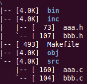

Header File Dependency in Makefile
When any header files are changed, it is desired to recompile all the source files related to them. GNU make deals with this by Auto-Dependency Generation. The idea can be summarized as two steps.
- invoke gcc (option -MM) to derive header dependency of all the source files.
- add header dependency in Makefile to let GNU make detect header file changes.
Let's take a look at the example. The following image shows how the demo project looks like.

All the source files and header files reside in subfolders 'src' and 'inc', respectively. Objective files (*.o) will be generated to subfolder 'obj'. Later, we'll find the dependecy files (*.d) here as well. As the final product, the binary executable file will be generated to subfolder 'bin'.
STEP ONE: GCC Auto-Dependency Generation
Call GCC like below to derive the dependency of 'src/aaa.c':
$ gcc -MM src/aaa.c -I./inc $ aaa.o: src/aaa.c inc/aaa.h inc/bbb.h
The output illustrates that 'aaa.o' depends on 'src/aaa.c' and header files 'inc/aaa.h' and 'inc/bbb.h'. We need to feed the dependency to Makefile and thus the output should be saved. GCC provides another option (-MMD) for this:
$ gcc -c src/aaa.c -MMD -I./inc -o obj/aaa.o -Wall $ cat obj/aaa.d $ obj/aaa.o: src/aaa.c inc/aaa.h inc/bbb.h
According to GCC manual, option '-MD' can be used to generate a dependency output file as a side-effect of the compilation process. Option '-MMD' works like '-MD' except metion only user header files, not system header files. From the console output, we know that 'obj/aaa.d' is the dependency output file. Wait, but we have not named it yet. So how did it come up with a name 'aaa.d' in subfolder 'obj'? GCC manual has the answer:
The driver determines the file based on whether an -o option is given. If it is, the driver uses its argument but with a suffix of .d, otherwise it takes the basename of the input file and applies a .d suffix.
We gave an -o option and thus GCC took the argument (obj/aaa.o) with a suffix of '.d' as the dependency output file name (obj/aaa.d).
STEP TWO: Makefile Updates
First off, we need to apply STEP ONE for every source file in the project. Makefile can achieve this easily:
DIR_INC=./inc DIR_SRC=./src DIR_OBJ=./obj CC=gcc CFLAGS=-I${DIR_INC} -MMD -MP #apply STEP ONE for every source file in ./src ${DIR_OBJ}/%.o: ${DIR_SRC}/%.c ${CC} -c $< ${CFLAGS} -o $@ -Wall
Take care that option '-MP' was added for CPP files. GCC manual has its details:
This option instructs CPP to add a phony target for each dependency other than the main file, causing each to depend on nothing. These dummy rules work around errors make gives if you remove header files without updating the Makefile to match.
Now, it's time to feed those dependency files to Makefile:
SRCS=$(wildcard ${DIR_SRC}/*.c) #all *.c files DIRS=$(notdir ${SRCS}) #get basenames OBJS=$(patsubst %.c,${DIR_OBJ}/%.o,${DIRS}) #all *.o files DEPS=${OBJS:%.o=%.d} #all *.d files #import the dependency files -include ${DEPS}
We need to add '-' ahead of 'include' as those dependency files do not exist before the first build. If not, GNU make will always terminate here because of the file missing. Indeed, we actually do not need those *.d files for the first build. They only make sense in the future when we change header files for the next build.
That's it! Let's make the project:
$ make $ gcc -c src/aaa.c -g -I./inc -MMD -MP -o obj/aaa.o -Wall $ gcc -c src/bbb.c -g -I./inc -MMD -MP -o obj/bbb.o -Wall $ gcc -o bin/aaa -g obj/aaa.o obj/bbb.o -Wall $ Build Succeeded.
OK, give some changes to 'inc/aaa.h' and then rebuild the project:
$ echo //dummy >> inc/aaa.h $ make $ gcc -c src/aaa.c -g -I./inc -MMD -MP -o obj/aaa.o -Wall $ gcc -o bin/aaa -g obj/aaa.o obj/bbb.o -Wall $ Build Succeeded.
Since 'inc/aaa.h' is not included in 'src/bbb.c' or 'inc/bbb.h', its change will not cause the recompilation of 'src/bbb.c'. Only 'src/aaa.c' needs to be recompiled. This confirms that our Makefile is able to detect header file changes and perform corresponding actions afterwards.
Complete Makefile
DIR_INC=./inc DIR_SRC=./src DIR_OBJ=./obj DIR_BIN=./bin CC=gcc CFLAGS+=-g -I./inc CFLAGS+=-MMD -MP EXEC=${DIR_BIN}/aaa SRCS=$(wildcard ${DIR_SRC}/*.c) DIRS=$(notdir ${SRCS}) OBJS=$(patsubst %.c,${DIR_OBJ}/%.o,${DIRS}) DEPS=${OBJS:%.o=%.d} all: ${EXEC} @echo "Build Succeeded." ${EXEC}: ${OBJS} ${CC} -o $@ -g $^ -Wall ${DIR_OBJ}/%.o: ${DIR_SRC}/%.c ${CC} -c $< ${CFLAGS} -o $@ -Wall -include ${DEPS} .PHONY: run clean run: ${EXEC} & clean: -rm ${EXEC} -rm ${OBJS} -rm ${DEPS}
There are comments.